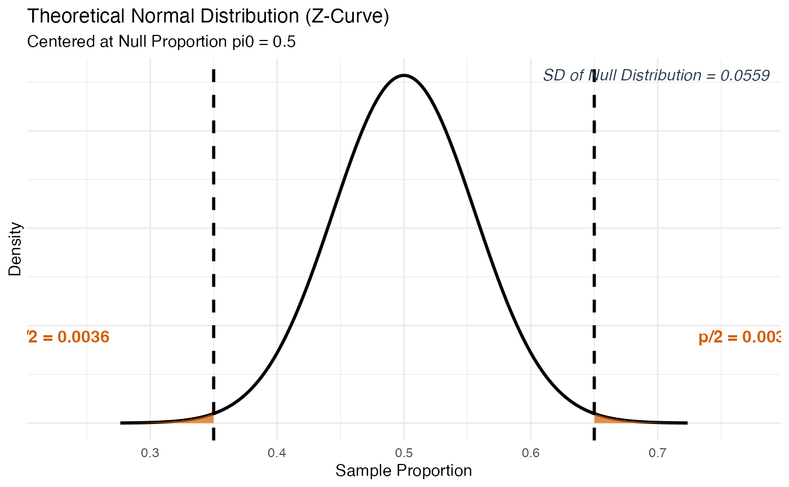
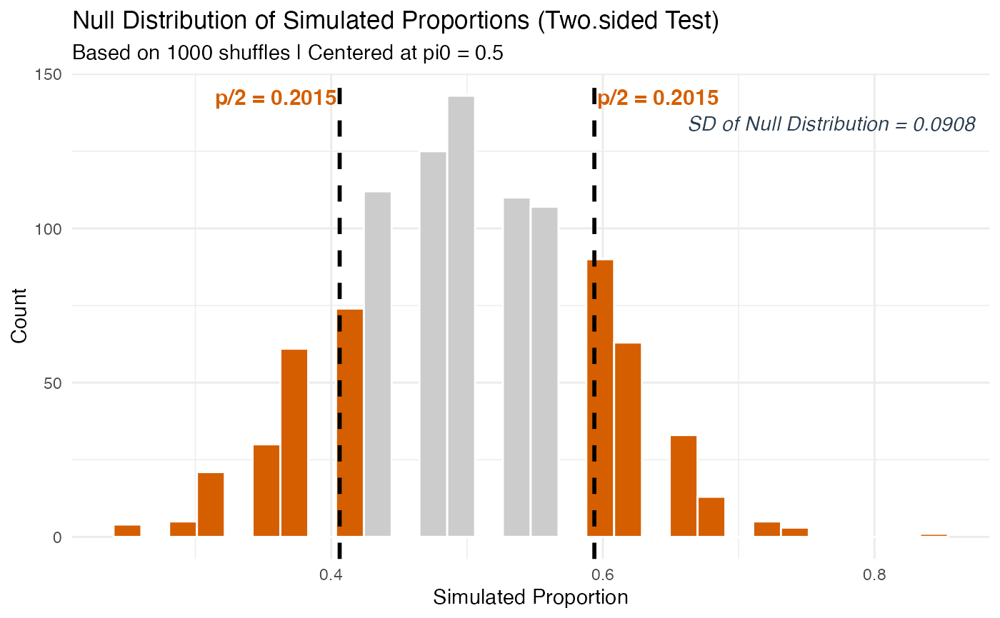

Tests a claim about a single population proportion (\(\pi\)) using either a simulation-based approach (The Great Shuffle) or a theory-based Z-test.
This function accepts input in two ways:
Summary Statistics: You already know the number of successes and the sample size (common in textbook homework problems where the data is summarized for you). Pass
successesandndirectly.Raw Data: You have an actual dataset loaded into R (common in activities and projects). Pass
formulaanddatainstead, and the function will count the successes for you.
Usage
test_1prop(
successes = NULL,
n = NULL,
formula = NULL,
data = NULL,
success_level = NULL,
null_pi = 0.5,
alternative = "two.sided",
method = "simulation",
sim_reps = 1000
)Arguments
- successes
A whole number representing the count of "successes" (i.e., the number of times the outcome of interest was observed) in your sample. For example, if 34 out of 80 students passed,
successes = 34. Only used when NOT providingformulaanddata.- n
A whole number representing the total sample size (how many observations were collected in total). For example, if you surveyed 80 students,
n = 80. Only used when NOT providingformulaanddata.- formula
A one-sided formula of the form
~ variablethat identifies the categorical variable in your dataset to analyze. For example,formula = ~ PassedwherePassedis a column in your data frame. Only used when NOT providingsuccessesandn.- data
A data frame (loaded from a
.csv,.txt, or.xlsxfile) that contains the variable named informula. Only used when NOT providingsuccessesandn.- success_level
A character string specifying which value of your categorical variable counts as a "success". For example, if your variable contains
"Yes"and"No", usesuccess_level = "Yes". This argument is required when usingformulaanddata.- null_pi
The hypothesized population proportion under the null hypothesis (H\(_0\)). This is the value you are testing your sample against. Must be a number strictly between 0 and 1. Default is
0.5.- alternative
The direction of the alternative hypothesis (H\(_a\)). Must be one of:
"two.sided"H\(_a\): \(\pi \neq\)
null_pi(default) – use when testing if the proportion is different from the null."greater"H\(_a\): \(\pi >\)
null_pi– use when testing if the proportion is greater than the null."less"H\(_a\): \(\pi <\)
null_pi– use when testing if the proportion is less than the null.
- method
The method used to calculate the p-value. Must be one of:
"simulation"Uses a simulation-based approach (The Great Shuffle). Recommended as the default and most intuitive approach for intro stats. The null distribution is built by repeatedly drawing random samples under the assumption that H\(_0\) is true.
"theory"Uses the traditional Z-test formula. Appropriate when validity conditions are met: at least 10 expected successes and 10 expected failures under the null (i.e., \(n \cdot \pi_0 \geq 10\) and \(n \cdot (1 - \pi_0) \geq 10\)).
- sim_reps
The number of simulated shuffles to run when
method = "simulation". More repetitions give a more stable p-value estimate. Default is1000. Increasing to5000or10000is reasonable for final analyses.
Value
An S3 object of class stat218_1prop containing all computed
values. You can use the following methods on the result:
print(result)Displays a clean summary of the test.
plot(result)Plots the null distribution with shaded p-value region, p-value annotation on the shaded area(s), and the SD of the Null Distribution. Use
plot(result, plot_type = "dotplot")for a dot plot (simulation only).plot_steps(result)Displays a detailed three-panel step-by-step interpretation with proper fraction notation.
Details
The Core Idea
In a one-sample proportion test, we are asking: "Is the proportion we observed in our sample consistent with some claimed population proportion, or is it too far away to be explained by random chance alone?"
The null hypothesis always takes the form H\(_0\): \(\pi =\) null_pi,
where \(\pi\) (Greek letter "pi") represents the true, unknown
population proportion.
Simulation Method (The Great Shuffle)
We simulate what the world would look like if the null hypothesis were
true by repeatedly drawing samples of size n from a population where
the true proportion is exactly null_pi. The SD of that simulated null
distribution goes in the denominator of the test statistic. The p-value
is the proportion of simulated samples as extreme as or more extreme than
our observed \(\hat{p}\).
Theory Method (Z-Test)
We standardize our observed \(\hat{p}\) using the formula: $$Z = \frac{\hat{p} - \pi_0}{SD_{null}}, \quad \text{where } SD_{null} = \sqrt{\frac{\pi_0(1-\pi_0)}{n}}$$ The SD of the null distribution is computed from the formula rather than simulated – but it represents the exact same concept.
Examples
# --- Summary Statistics Path ---
# A claim that 50% of students prefer online learning.
# In a sample of 80 students, 52 said yes.
result <- test_1prop(successes = 52, n = 80, null_pi = 0.5,
alternative = "two.sided", method = "theory")
print(result)
#>
#> ── 1-Sample Proportion Test (Theory) ───────────────────────────────────────────
#> ℹ Sample Proportion (p-hat): 0.65 (52/80)
#> ℹ Null Hypothesis (pi0): 0.5
#> ℹ Alternative: two.sided
#> • SD of Null Distribution: 0.0559
#> • Test Statistic (Z): 2.683
#> • P-Value: 0.0073
plot(result)

if (FALSE) { # \dontrun{
plot_steps(result)
} # }
# --- Raw Data Path ---
# Using mtcars: is the proportion of manual transmission cars different from 50%?
car_data <- mtcars
car_data$transmission <- ifelse(mtcars$am == 1, "Manual", "Automatic")
result2 <- test_1prop(formula = ~ transmission, data = car_data,
success_level = "Manual", null_pi = 0.5,
alternative = "two.sided", method = "simulation")
#> ✔ Data extracted from variable "transmission":
#> • Success level : "Manual"
#> • Successes: 13 | Sample size (n): 32
print(result2)
#>
#> ── 1-Sample Proportion Test (Simulation) ───────────────────────────────────────
#> ℹ Sample Proportion (p-hat): 0.4062 (13/32)
#> ℹ Null Hypothesis (pi0): 0.5
#> ℹ Alternative: two.sided
#> • SD of Null Distribution: 0.0908
#> • Test Statistic (Z_sim): -1.033
#> • P-Value: 0.403
plot(result2)

if (FALSE) { # \dontrun{
plot_steps(result2)
} # }